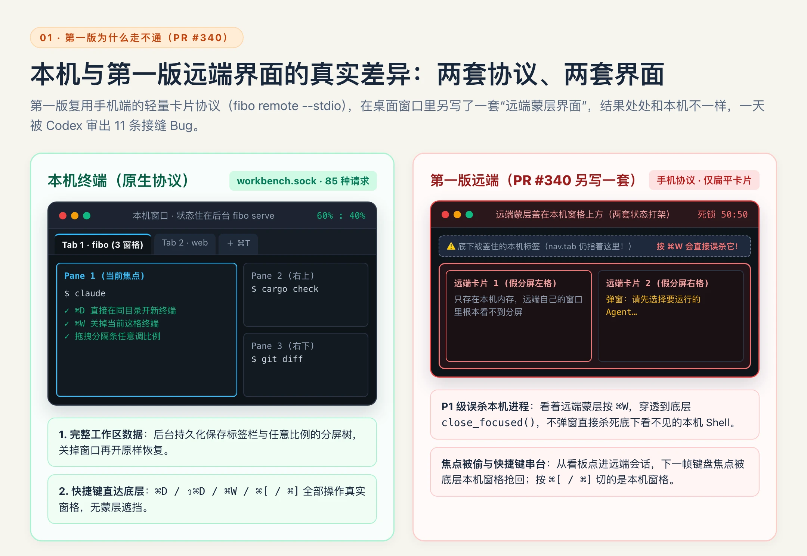
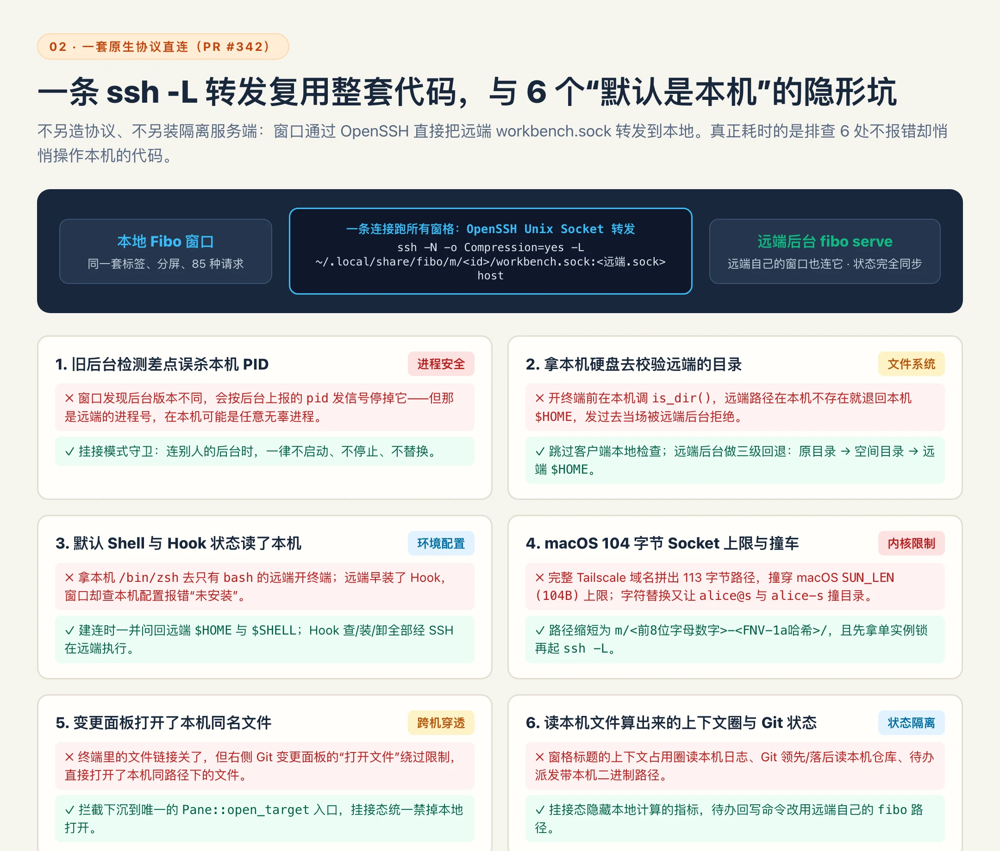
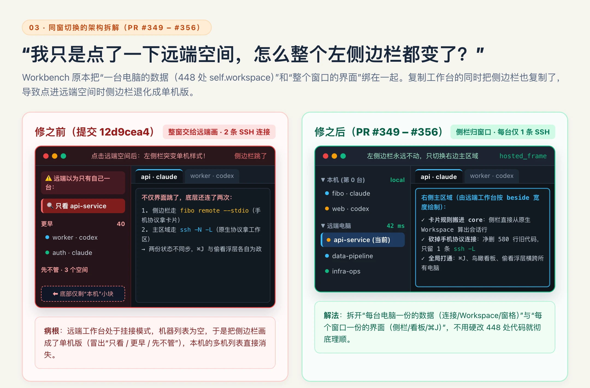
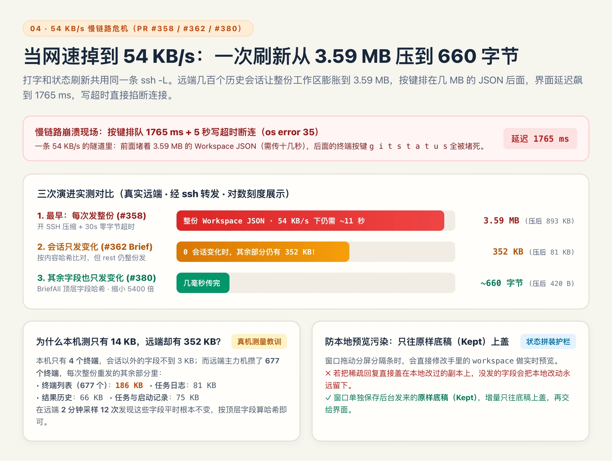
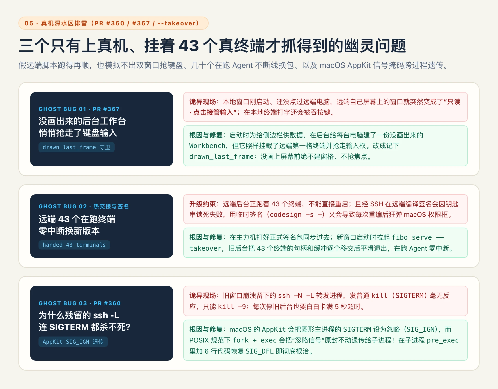

技术架构 · 2026 年 11 月
一个窗口，管多台电脑上的终端：Fibo 跨机终端架构与慢链路同步设计
当并行的 Claude Code、Codex 等 Coding Agent 数量超过十几个时，终端工作流很快就会突破单台电脑的边界。Fibo 要解决的核心命题是“多台电脑、一个窗口”：无论终端实际运行在哪台机器上，都在同一个窗口里开标签、按 ⌘D 分屏、拖拽分隔条、直接打字，并用 ⌘J 在所有机器的待处理会话之间无缝跳转。本文从五个核心工程维度，拆解我们为何推翻第一版独立远程界面、如何通过一条 Socket 隧道复用整套代码、如何解耦 448 处单机状态引用，以及在 54 KB/s 慢链路上如何把单次状态同步从 3.59 MB 压缩 5400 倍至 660 字节。

01 协议选型：为什么“轻量协议 + 另写一套远端界面”走不通？
在单机架构下，Fibo 的终端并不归窗口进程（fibo-app）管，而是由常驻后台守护进程（fibo serve）持有；窗口只是一个无状态客户端，通过本地 Unix Domain Socket（workbench.sock）连接后台。在支持桌面跨机之前，Fibo 已经有一套面向手机端的轻量远程协议（ssh host fibo remote --stdio），远端后台将每个终端概括为一张扁平的摘要卡片（Card），仅包含标题、运行状态和当前目录。
这套数据模型对手机端看状态、点审批恰到好处，但桌面端需要的是完整的标签栏、任意方向与比例的分屏树，以及 85 种原生 RPC 请求。最直观的捷径，是在保留手机卡片协议的基础上，“远端缺什么，就在桌面窗口里给它补什么”——先后在客户端补齐远程开始页、远程主区域，以及一套仅存于客户端内存的远程分屏容器（PR #340）。

然而，当“本机”和“远端”建立在两套截然不同的数据模型与 UI 代码之上时，两者的行为差异根本无法抹平：
- 分屏状态脱节：本机分屏树持久化在
fibo serve后台，支持任意拖拽比例，关窗重开原样恢复；而基于卡片拼装的远端分屏只活在当前窗口内存里，比例死锁在 50:50。如果你走到远端电脑前查看它自己的 Fibo 窗口，上面根本不存在这个分屏，依然是一排散装标签。 - 交互路径分叉：本机按
⌘D直接在同目录派生新 Shell；远端分屏却不得不先弹窗选择 Agent。本机按⌘W是销毁终端进程；远端蒙层上的⌘W只是隐藏客户端视图。
更致命的问题出在两套状态机的接缝处。因为远端视图是作为蒙层（Overlay）盖在本机主区域上方的，底层本机工作区的导航状态（nav.tab、layout.panes）依然在后台存活。在对该方案的自动代码审查中，单日就暴露出 11 处接缝缺陷：
- 快捷键穿透误杀进程：当远端终端或远程开始页盖住主区域时，底层的
nav.tab并未改变。此时用户看着眼前的远端画面按下⌘W，事件直接穿透到底层的close_focused()，连确认框都不弹，当场杀死了底下看不见的本机 Shell 进程。 - 焦点被底层窗格夺回：从全局鸟瞰看板点进一个远端会话时，退出看板的逻辑顺手将
nav.pending_focus置为true。下一帧渲染时，窗口立刻把键盘焦点切回了被遮挡的本机窗格，导致眼前的远端终端完全无法输入。 - 分屏导航与下标错位：按
⌘[和⌘]切换分屏时，代码去遍历本机的layout.panes；远程开始页用数组下标（machine_idx）记录所属机器，一旦用户在设置里删掉排在前面的机器 A，屏幕上机器 B 的开始页就会把新终端直接开到机器 C 上。
横向对比主流开发工具的远程架构，原因一目了然：
| 产品 | 状态归属 | 通信机制与协议策略 |
|---|---|---|
| VS Code Remote-SSH | 远端 VS Code Server | 本地界面经 SSH 连接远端，与连接本地使用同一套协议 |
| Zed 远程开发 | 远端 zed-remote-server | 调用系统 ssh 转发，复用完整工作区模型 |
| WezTerm 多路复用 | 远端多路复用守护进程 | 经 SSH 直连远端 Unix Socket，本机与远端标签在同窗口同构共存 |
iTerm2 + tmux -CC | 远端 tmux 进程 | 将异构的 tmux 控制协议翻译为本地原生标签（重连与状态错乱高发） |
前三家的共识非常明确：状态留在远端，本地只是界面，且连远端与连本机必须使用同一套协议。只要客户端同时维护两套终端界面，本机每新增一项特性，远端就要重写一遍。我们随即关闭了 PR #340，确立了第一条核心架构原则：废除独立的桌面远程界面，远端与本机必须走完全相同的一套原生协议与 UI 代码。
02 协议统一与边界隔离：一条 Socket 隧道背后的“本机假设”
与 VS Code 和 Zed 在远端额外部署一套与客户端版本锁死的隔离服务端（如 ~/.vscode-server）不同，Fibo 有一个独特的产品约束：用户在本地窗口为远端机器开的标签和分屏，远端机器自己的桌面窗口也必须实时看到、无缝接着操作。
这意味着本地窗口与远端自己的窗口必须连接同一个 fibo serve 后台。由于 Fibo 本身就是前后端分离架构——后台持有 PTY、工作区和状态规则，窗口通过 workbench.sock 发送带长度前缀的 JSON 帧，每个终端窗格各自建立一条流连接收画面、发按键——我们不需要发明任何新协议。OpenSSH 原生支持将远端 Unix Domain Socket 转发到本地文件系统：
ssh -N -o Compression=yes -o StreamLocalBindUnlink=yes \
-L ~/.local/share/fibo/m/<id>/workbench.sock:<远端 workbench.sock> remote一条 ssh -L 隧道即可多路复用任意数量的窗格连接。由窗口进程自动拉起并守护这条隧道后，客户端连接远端与连接本机在协议层 100% 同构，⌘T、⌘D、⇧⌘D、拖拽分屏比例全部开箱即用。

协议打通只花了一个小时，但要把一个原本只考虑 localhost 的桌面客户端改造成跨机客户端（PR #342），真正的难点在于清理代码库里隐含的“后台与窗口在同一台操作系统上”的假设。这些代码不会抛出任何异常，只会静默地操作错机器：
- 1. 进程生命周期隔离（防跨机误杀 PID）：本机窗口连接后台时会校验二进制构建指纹。若发现后台版本不一致，窗口会将其视为旧版后台，自动发起
--takeover接管或向后台上报的pid发送终止信号。但在跨机挂接模式下，该pid属于远端操作系统的进程空间，在本机上可能对应任意无辜进程。因此我们引入了挂接模式守卫（an_attached_host_is_never_stopped_started_or_stale）：凡是挂接远端后台的连接，客户端一律禁止启动、停止或替换后台进程。 - 2. 文件系统校验与目录回退下沉：原本在新建终端或按
⌘D继承当前目录时，客户端会先调用本机的Path::new(&cwd).is_dir()。当远端路径在本机硬盘上不存在时，客户端会将其回退为本机的$HOME，发往远端后台后因目录不存在而被直接拒绝；反之，若远端某个 Git worktree 目录已被删除，远端后台也会报错。正确的边界划分是：客户端彻底放弃路径存在性检查，将目录回退逻辑全部下沉至远端后台（host/start_dir.rs），按“请求的原目录 → 所属空间根目录 → 远端自己的$HOME”执行三级自动回退。 - 3. 远端环境探测与本地入口门控：客户端建连探测脚本在查询
fibo socket路径的同时，一次性取回远端的$HOME、$SHELL与machine-id，避免拿本机的/bin/zsh去只有/bin/bash的远端机器启动终端；Claude Code 的 Hook 查询、安装与卸载全部改由 SSH 在远端执行；右侧 Git 变更面板的“打开文件”拦截统一收口至底层的Pane::open_target入口，并对本地计算的上下文占用圈和 Git 领先/落后状态做隐藏处理。 - 4. 内核 Unix Socket 路径上限（104 字节）与命名防碰撞：macOS 内核的
sockaddr_un结构体对 Unix Domain Socket 路径长度有着严格的 104 字节（SUN_LEN）硬上限。早期将转发 Socket 放在<runtime>/machines/<host>/attached-client/client.sock下，当用户配置完整 Tailscale 域名（如user@host.tailnet123.ts.net）时，路径长度达到 113 字节，直接导致内核拒绝绑定；而如果简单将特殊字符替换为横杠，alice@server与alice-server又会映射到同一个目录争抢锁。最终我们将路径压缩为<runtime>/m/<前8位字母数字>-<64位FNV-1a哈希>/，既保证可读性与零碰撞，又将总字节数严格控制在 80 字节以内，并确保先拿单实例锁再起ssh -L。
03 视图与数据源解耦：为什么“每台电脑一份工作台”会导致侧边栏跳变？
实现了单窗口挂接远端之后，下一步是在同一个窗口内跨机器自由切换：点击左侧边栏任意一台电脑的空间，右侧主区域立即切到该机器的标签与分屏。
这里横亘着单机时代留下的最大结构耦合：Workbench 结构体同时承担了“一台电脑的数据容器”和“整个窗口的顶层视图”双重角色。全仓库共有 448 处直接访问 self.workspace、66 处访问 self.store、50 处访问 self.layout.panes，另有 54 处异步回调和 34 处状态订阅默认全局只有一个后台。
如果在同一个 Workbench 实例里直接热替换 store 和 workspace，状态订阅、每秒刷新的缓存（额度、上下文圈、标签标题）和终端窗格会立即跨机器串台。为了避开一次性改动 400 多处调用点的高昂风险，早期尝试（提交 12d9cea4）采用了多实例托管：在内存中为每台远端电脑实例化一整份独立的 Workbench；当用户点击远端空间时，顶层渲染函数直接把整个窗口交给那台电脑的 Workbench 绘制。

这个捷径立刻引发了两个严重的架构缺陷（见上图左）：
- 左侧边栏退化为单机样式：因为数据和侧边栏绑在同一个
Workbench里，切换机器时把侧边栏也一起换掉了。而远端那份Workbench处于挂接模式，读取到的机器列表为空——它以为全世界只有自己这一台电脑，于是把左侧边栏画成了单机版（出现“只看某空间”、“更早 40”、“先不管 · 3 个空间”），原本的多机树状列表瞬间消失，本机入口缩成了底部一个不起眼的小按钮。 - 同一台远端电脑被连了两次：左侧边栏里的远端分组仍在走旧的手机协议（
ssh host fibo remote --stdio）拉取摘要卡片，而右侧主区域又通过原生协议（ssh -N -L）连了一次。两条 SSH 连接各自维护一份状态，侧边栏和主区域看到的经常不是同一时刻的数据。
看清问题本质后，我们没有去硬改那 448 处 self.workspace，而是通过 PR #349 至 #357 将窗口架构干净地拆成了两层：
| 每台电脑一份的数据源（Per-Host Data Source） | 每个窗口一份的视图壳层（Per-Window View Chrome） |
|---|---|
| Socket 连接、请求队列与重连退避状态 | 左侧边栏：多机树状列表、筛选、折叠与滚动位置 |
该机器的完整 Workspace 快照与增量基线 | 全局鸟瞰看板、搜索面板、⌘J 跨机待处理排序 |
该机器的终端窗格实例（layout.panes） | 偷看浮层（Peek）、主题配色、字号与快捷键映射 |
| 在该机器上选中的空间、标签页与输入焦点 | 当前主区域正在显示哪台机器 |
在渲染层，顶层窗口的 hosted_frame 永远绘制本窗口自己的多机侧边栏，并将侧边栏像素宽度（beside）传给当前激活的远端工作台；远端工作台不再绘制侧边栏，只负责绘制右侧的主区域（标题行、标签栏、分屏窗格与状态栏）。
同时，我们将后台为手机端拼装卡片的纯函数提炼至共享库 fibo_core::remote_cards（PR #353）。窗口启动时即在后台静默连上所有机器的原生 Socket（PR #352），左侧边栏直接基于各台机器的原生 Workspace 实时计算会话行；⌘J 跳转与鸟瞰看板通过 HostEvent 统一上浮至顶层窗口跨机调度（PR #354）。如此一来，旧的桌面端手机协议连接被彻底移除（PR #356，净删近 600 行代码），每台远端电脑严格只保留唯一一条 ssh -N -L 连接。
04 慢链路同步协议设计：从 3.59 MB 到 660 字节的内容寻址增量
本地客户端架构里最容易被忽视的性能隐患，是把“本地进程间通信（IPC）的低延迟高吞吐”当成理所当然。Fibo 原本的状态同步机制非常简单：后台的工作区只要发生任何变化，就通过状态流推送一个递增的 workspace_revision；窗口发现本地版本落后，就发起 Request::Workspace 拉取一整份工作区 JSON。在本机 Unix Socket 上，传输一份 1.6 MB 的 JSON 耗时不到 10 毫秒。
然而，当跨机链路因为无线环境或跨网中继掉到约 54 KB/s 时，这套全量拉取机制立刻触发了两个系统级故障：
- 5 秒零进度写超时导致连接雪崩：在长期运行、积累了数百个历史会话的远端主力机上，单份完整的
WorkspaceJSON 高达 3.59 MB。在 54 KB/s 的链路上，传输一次需要几十秒；一旦内核 Socket 发送缓冲区填满、后台连续 5 秒未能写出任何字节，后台就会抛出Resource temporarily unavailable (os error 35)并主动断开连接，客户端读到半截数据直接报错RPC receive reply: failed to fill whole buffer。 - 队头阻塞（Head-of-Line Blocking）拖垮打字回显：终端按键与工作区刷新共用同一条
ssh -L隧道。当几 MB 的工作区 JSON 塞满隧道时，用户的敲键请求只能排在后面等待，导致界面实测打字延迟飙升至 1765 ms。

为了在不动摇上层 UI 代码（界面依然接收完整的 Workspace 结构体）的前提下彻底消除阻塞，我们分三层重构了同步协议：
第一层：传输层压缩、零进度超时与自适应限频（PR #358 / #362）
首先为 ssh -L 开启 Compression=yes，3.59 MB 的 JSON 在线上被压缩至 893 KB，传输时间从约 35 秒降至 11 秒；同时将后台写回复超时从 5 秒放宽至 30 秒，且仅在连续 30 秒内一个字节都写不出去时才判定超时（PR #358）。此外，客户端对远端刷新引入自适应流控（Adaptive Pacing）：若上一次刷新耗时为 T，则下一次刷新前至少等待 min(T, 10s)，确保慢链路至少留出一半的时间窗口供终端按键实时通行。
第二层：会话级内容寻址增量与“开发机测量陷阱”（PR #362 Brief）
在开发机上剖析 Workspace 结构时，98% 的字节集中在 sessions（会话元数据列表）和 session_contents（每个会话的详情与消息）。因此我们设计了增量请求 Brief(上次底稿的编号, 原请求)（PR #362），后台只返回发生变化的会话条目：
struct WorkspaceDelta {
stamp: u64, // 当前工作区内容的 64 位 FNV-1a 哈希
base: Option<u64>, // 差分所基于的底稿哈希；None 表示全量
sessions: Vec<ManagedSession>, // 新增或发生变化的会话
session_order: Option<Vec<String>>,// 顺序变化时才携带
session_contents: BTreeMap<String, SessionContent>,
removed_sessions: Vec<String>,
rest: WorkspaceRest, // 除会话外的其余顶层字段
}- 用内容哈希代替版本号作为底稿编号（
stamp: u64）：如果用递增的revision做基线标识，一旦远端后台重启，revision从头计数就可能与客户端手里的旧快照撞号；而基于内容计算的 64 位 FNV-1a 哈希天然具备全局唯一性。 - 双端多版本环形缓存：后台在内存中保留最近发出的 16 份快照索引（供本机窗口、菜单栏及多台跨机客户端并发比对）；客户端保留最近 3 份底稿（防止刷新请求与编辑请求并发在途时，后返回的增量找不到基线）。若底稿缺失，客户端自动退化为请求全量。
- 能力协商向前兼容：新后台在握手状态中广播
brief能力位，客户端仅在识别到该能力时才发送Brief，确保单边升级时不会因未知枚举变体断开连接。
在开发机上实测，单次刷新从 1.68 MB 骤降至 14–22 KB。然而，当我们将双端部署到真实环境再次测量时，却发现了一个典型的“开发机样本偏差”：在远端主力机上，即便没有任何一个会话发生变化，每次 Brief 刷新依然高达 352 KB（压缩后 81 KB）！
其余部分（rest）中体积最大的顶层字段 | 真实远端实测体积 |
|---|---|
terminals（677 个历史与活跃终端记录） | 186 KB |
task_logs（任务执行日志） | 81 KB |
outcome_history（历史结果记录） | 66 KB |
tasks（待办与任务项） | 39 KB |
agent_launches（Agent 启动记录） | 36 KB |
原因在于：开发机平时只开了 4 个终端，除会话以外的其余字段加起来不到 3 KB；而远端主力机上累计有 677 个终端，每次原样重发的 rest 部分本身就是 352 KB。
第三层：顶层字段哈希与 Kept 原样底稿隔离（PR #380 BriefAll）
面对这 352 KB 的 rest 数据，是否需要为 terminals、task_logs 等逐一编写细粒度条目级 Diff？在写代码前，我们先在真实远端上做了一次低成本观测：连续 2 分钟采样 12 次工作区快照。结果显示，这 2 分钟内上述 5 个大字段一次都没有变过——它们只在用户新建/关闭终端或后台任务完结的瞬间才会改变。
既然稳态下变化频率极低，按 Workspace 的顶层字段算哈希就足够了。我们在 BriefAll 协议（PR #380）中让后台为 rest 的每个顶层字段计算哈希，未发生变化的字段直接在 JSON 响应中省略。
这里隐藏着一个极易踩中的状态合并陷阱：客户端本地预览对增量底稿的污染。当用户在窗口中拖拽分屏分隔条时，客户端为了保证跟手体验，会直接修改内存里的 self.workspace 做实时布局预览。如果把后台发来的稀疏字段直接覆盖到这份被本地改过的 self.workspace 上，那些“因为服务端没变而被省略”的字段，就会把客户端临时的本地预览改动永久保留下来。为此，客户端在 Held 缓存中严格保存了一份后台发来的原样底稿（Kept），每次收到 BriefAll 稀疏增量时只往干净的 Kept 底稿上覆盖，再生成新工作区交给界面渲染。
三层改造全部合入后，真实远端单次刷新的大小从最早的 3.59 MB（压缩后 893 KB），经过 352 KB（压缩后 81 KB），最终降至 约 660 字节（压缩后约 420 字节），体积缩小约 5400 倍。在 54 KB/s 的慢链路上，420 字节只需几毫秒即可传完，彻底根除了状态刷新对终端打字的队头阻塞。
05 跨机并发与进程生命周期：输入租约、零中断热交接与信号掩码遗传
单机单元测试与本机伪造的假 SSH 验收脚本（attach-evidence.sh）能够覆盖绝大多数协议逻辑，但以下三个涉及多窗口竞争、长连接守护与操作系统内核特性的问题，只有在真实的多机生产环境中才会浮出水面：

1. 多窗口输入租约与“未绘制工作台抢键盘”（PR #367）
由于远端机器自己的窗口和本地窗口可以同时打开同一个终端，如果允许两边同时写入，按键字节流会在 PTY 中交错错乱。因此 Fibo 实现了排他性的输入租约（Input Lease）：同一时刻只有一个窗口持有输入权，另一端显示“只读 · 点击接管输入”。我们将策略调整为“后打开该终端的窗口自动接管输入”（偷看浮层 Peek 例外，仅在敲下第一个按键时才接管）。
然而该策略上线当天就出现了一个诡异现象：本地窗口刚启动、用户还没点击过远端机器，远端自己屏幕上的窗口就突然变成了“只读”；而在本地窗口给本机终端打字时，按键还会被莫名吞掉。根因在于：窗口启动时为了给左侧边栏提供实时数据，会在后台为每台远端电脑预先创建一个 Workbench 实例。虽然远端那份 Workbench 根本没有被绘制在屏幕上，但它的初始化逻辑依然照常运行——自动挂载了远端第一个标签页的所有终端并抢走了输入租约。修复方案是为 Workbench 引入渲染帧门控（drawn_last_frame，PR #367）：处于未绘制后台驻留态时，一律禁止创建终端窗格、禁止申请输入租约；直到工作台真正被绘制上屏的那一帧，才补建窗格并接管焦点。
2. 43 个在跑终端的零中断热交接（--takeover）与跨机签名陷阱
在将双端升级至支持 BriefAll 的新版本时，远端后台正跑着 43 个终端，升级过程绝对不能中断任何终端。这依赖于 fibo serve 的 --takeover 热交接机制：当新版窗口启动并检测到本地后台版本较旧时，会拉起新后台并传入 --takeover；旧后台通过本地 Socket 将所有存活终端的 PTY 文件描述符与滚屏缓冲区逐一移交给新后台，确认全部接管后再安全退出（实测升级日志：handed 43 terminals to a newer host）。
同时，在 macOS 跨机部署中切勿通过 SSH 在远端直接执行 cargo build 与 codesign：非交互式 SSH 会话中登录钥匙串默认锁定，无法使用 Developer ID 签名；若退而使用临时签名（codesign -s -），每次重编都会改变二进制 CDHash 标识，导致 macOS TCC 权限系统将其视为陌生程序而反复弹窗。规范做法是在主力机完成正式签名与校验，再将完整 .app 包同步至远端。
3. 为什么残留的 ssh -L 子进程连 SIGTERM 都杀不死？（PR #360）
在排查进程残留时，我们发现旧窗口异常退出后留下的 ssh -N -L 转发进程对普通的 kill（即 SIGTERM）完全免疫，必须使用 kill -9 才能终止；同时，每次热替换旧后台时，stop_process 总是要白白卡满 5 秒超时才会走强杀分支。
追查到底层，这是 macOS GUI 框架与 POSIX 进程模型叠加产生的一个冷门陷阱：macOS 的 AppKit 在初始化窗口主进程时，会将主进程的 SIGTERM 信号处置方式设为忽略（SIG_IGN）；而根据 POSIX exec 规范，父进程通过 fork + exec 启动子进程时，注册了处理函数的捕获信号会被重置为默认，但被设为 SIG_IGN（忽略）的信号掩码会跨 exec 原封不动地遗传给子进程。我们在子进程生成器中加入了 6 行 pre_exec 钩子（takes_term，PR #360），在 exec 前显式恢复 SIG_DFL，彻底消除了孤儿隧道残留与停机 5 秒卡顿。
总结：跨机桌面架构的五条工程原则
- 1. 用隧道复用同一套原生协议，永远优于维护两套 UI：当本机与远端的数据模型不同构时，客户端每补一个功能就会多一道接缝。通过
ssh -L转发底层 Unix Socket，让远端与本机跑完全相同的 85 种请求与分屏代码，是从根源上消灭接缝 Bug 的唯一解法。 - 2. 显式隔离“每台机器的数据源”与“每个窗口的视图壳层”：将侧边栏、鸟瞰看板与
⌘J提炼为窗口级单例，将Workspace与窗格收敛为机器级数据源，才能在一个窗口内实现无感切换并把每台机器的连接收敛为唯一一条。 - 3. 警惕不报错的“隐式本机假设”：单机代码改跨机时，最危险的不是网络报错，而是静默操作本机资源的代码——拿着远端 PID 调本机
kill、拿本机is_dir()校验远端路径、读本机$SHELL与 Hook 配置，以及超出 macOS 104 字节上限的 Socket 路径。 - 4. 增量协议必须在真实生产数据上测量，并隔离本地预览底稿：在只有 4 个终端的开发机上测量，永远发现不了远端 677 个历史终端带来的 352 KB 元数据开销；而在做稀疏字段增量（
BriefAll）时，必须维护一份不受 UI 拖拽预览污染的原样底稿（Kept）。 - 5. 跨机验证必须覆盖真机弱网、并发焦点与 OS 信号边界：无论是未绘制工作台抢夺输入租约（
drawn_last_frame）、43 个终端的--takeover热交接，还是AppKit遗传SIG_IGN导致子进程无法优雅退出，都只有在真实的双机环境与慢链路压力下才会彻底暴露。
后续演进方向：当跨洲链路打字回显 p95 超过 200 ms 时引入本地预测回显（类似 WezTerm 的预测模型）；将远端终端内的文件点击链接映射为本地编辑器远程打开；以及让上下文占用圈和 Git 领先/落后计数由远端后台计算后随增量协议下发。目前双端实测基于 macOS；v0.1.3 起 Windows x64 和 Ubuntu 24.04 有预览版。